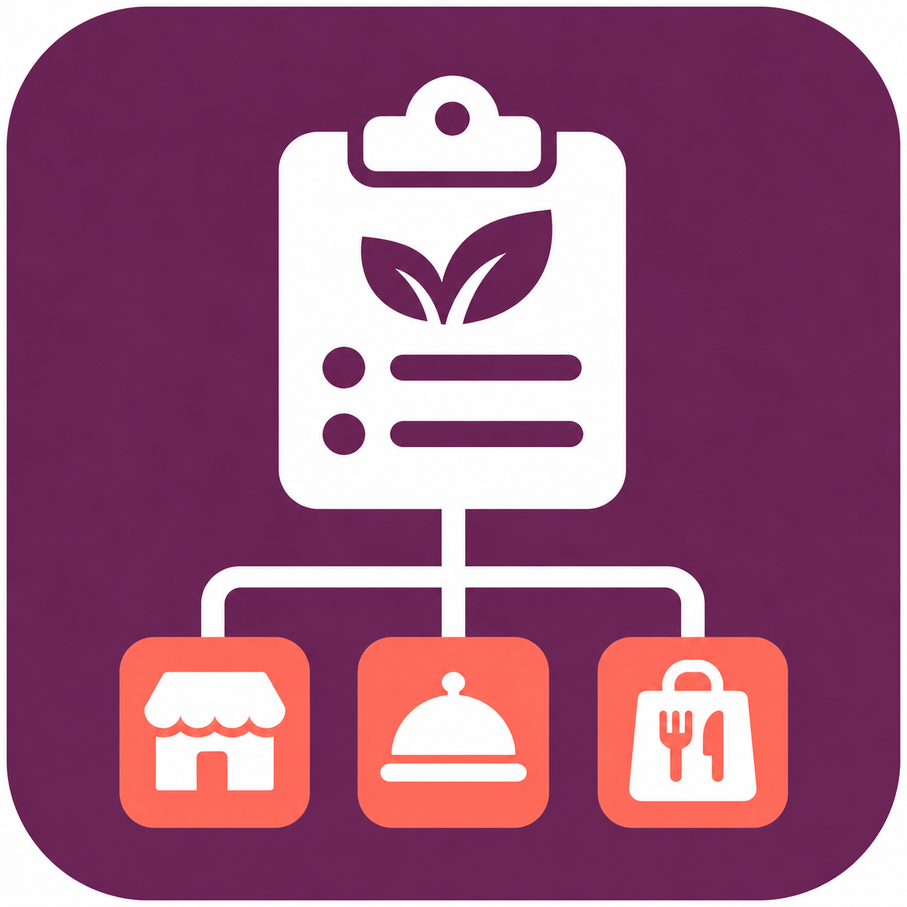
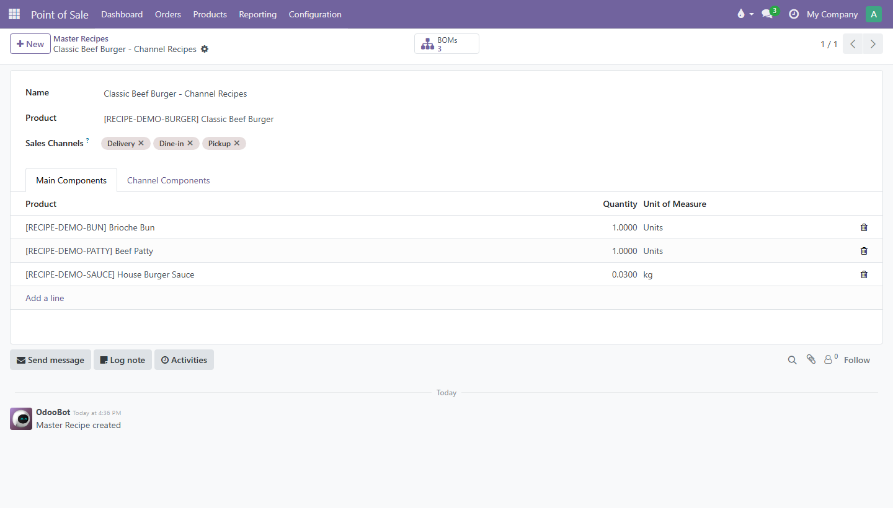
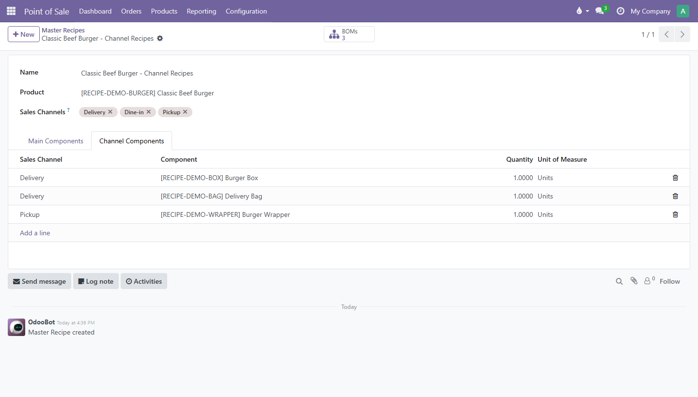
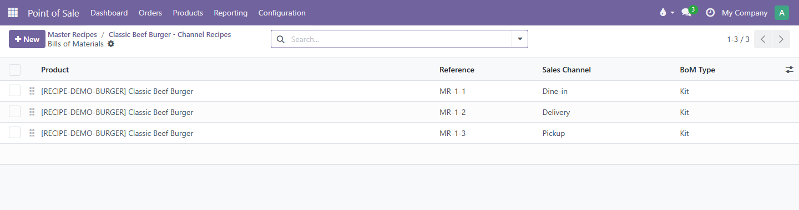
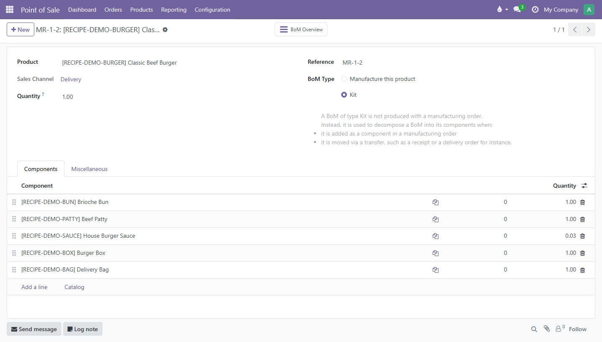
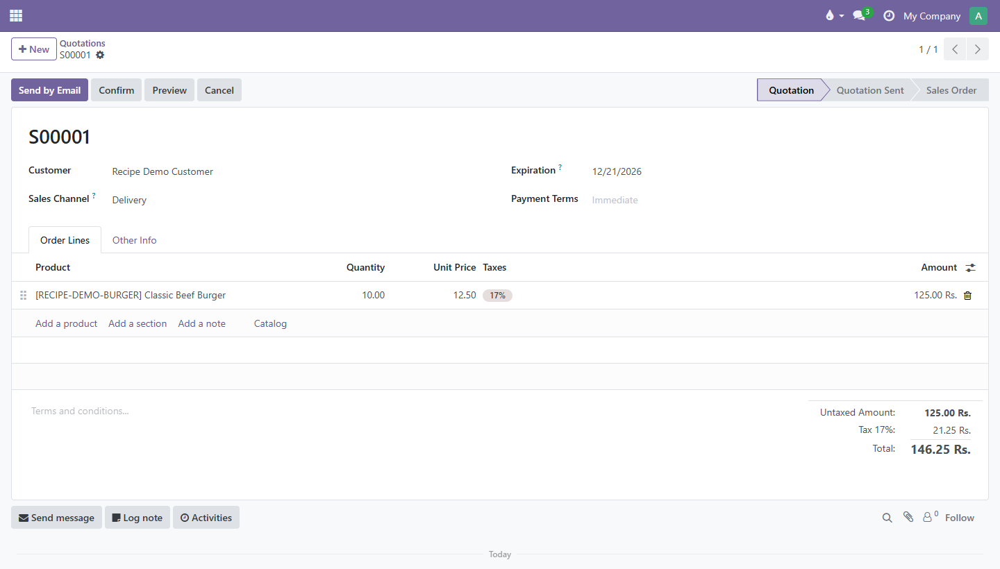

One recipe. Every sales channel.
Manage shared ingredients and channel-specific components from one master recipe. Let each sales channel use its own bill of materials.
Odoo 17 Point of Sale Sales Orders Multi-company
One master recipe
Maintain your common ingredients once.
One BoM per channel
Generate recipes with the right extras.
Channel-aware fulfillment
Select recipes for POS and Sales Orders.
Built for recipe variations
01 / Central recipe management
Choose a product and company, define common ingredients, and add channel-specific extras in the same form.
02 / Generated channel BoMs
Saving recipe changes maintains a phantom (kit) BoM for every selected floor. Open generated BoMs from the recipe's smart button.
03 / Restaurant POS
POS orders select their recipe from the restaurant table's floor, with stock moves consuming that channel's components.
04 / Sales Orders
Select a restaurant floor in the Sales Channel field before confirmation. Procurement uses the matching recipe in the order's company.
05 / Component quantities
Common quantities convert to each product's default unit of measure. Repeated component products merge into one generated BoM line.
06 / Company-specific recipes
Recipes and generated BoMs belong to a company. Recipe and component access follows the user's allowed companies.
See it in Odoo
Follow a sample recipe through reference screens from the Odoo 18 version: define the ingredients, add packaging, and inspect the channel-specific bills of materials.
Screenshots show demonstration records from the Odoo 18 version; the Odoo 17 interface may differ. Sample products and recipes are not included with the module.
01 / Build your shared recipe
Select Dine-in, Delivery, and Pickup, then enter the bun, beef patty, and sauce under Main Components. The BoMs smart button gives you direct access to the three generated recipes.

02 / Add only the extras each channel needs
Delivery adds a burger box and delivery bag. Pickup adds a wrapper. Dine-in needs no extra line: its selected channel still receives a BoM with the shared ingredients.

03 / Review the generated variations
Open the recipe's BoMs smart button to see its Dine-in, Delivery, and Pickup bills of materials together, with the sales channel visible on each row.

04 / Inspect the complete channel recipe
The Delivery kit BoM contains the bun, patty, and sauce plus its box and bag. Maintain these definitions on the master recipe; saving recipe changes updates the generated BoMs.

05 / Choose the channel before confirmation
Select Delivery in the quotation's Sales Channel field. When the order is confirmed, procurement uses the matching channel recipe. Restaurant POS gets its channel from the order's table floor.

Example: one burger, three channels
Define the bun, patty, and sauce as common components. Add packaging only where it is needed. The names below represent restaurant floors configured as sales channels.
| Sales channel | Shared recipe | Channel extras | Generated result |
|---|---|---|---|
| Dine-in | Bun, patty, sauce | No extra components | Dine-in kit BoM |
| Delivery | Bun, patty, sauce | Burger box and delivery bag | Delivery kit BoM |
| Pickup | Bun, patty, sauce | Burger wrapper | Pickup kit BoM |
Illustrative example. Products, floors, and quantities are configured by your team; sample recipes are not included.
1.
Open Point of Sale > Configuration > Products > Master Recipes. Set the product and company, then add common ingredients with quantities and units of measure.
2.
Select restaurant floors in Sales Channels. Add optional extras in Channel Components, using each component's default unit of measure, and save.
3.
POS takes its channel from the table's floor. For Sales Orders, select Sales Channel on the quotation before confirming.
Built for Odoo 17 using standard Manufacturing, Sales/Manufacturing, Inventory Accounting, Point of Sale, Restaurant, Units of Measure, and Discuss modules.
No external connector or third-party addon is required. Sales and Manufacturing users receive read access to the restaurant-floor selector.
No. Select a floor in the recipe's Sales Channels field to generate a BoM containing only the shared ingredients. A floor used on a Channel Components line also gets a generated BoM.
Odoo falls back to an ordinary non-channel BoM if one exists. If none exists, standard processing continues without a kit BoM. Another channel's generated recipe is never used as a default.
The channel is locked after confirmation. Cancel and reset the order to draft before changing it. Existing completed stock operations are not rewritten.
Maintain ingredients on the master recipe. Saving recipe changes replaces generated BoM lines, so review outstanding stock operations before changing recipes already in use.
The module includes a POS invoice cost-of-goods-sold calculation based on completed component moves and their stock valuation layers, for eligible Anglo-Saxon accounting flows. Your product valuation and accounting configuration still apply.
Multi BOM Recipe · Odoo 17 · LGPL-3
By Talha Khan — Odoo Developer & Technical Consultant